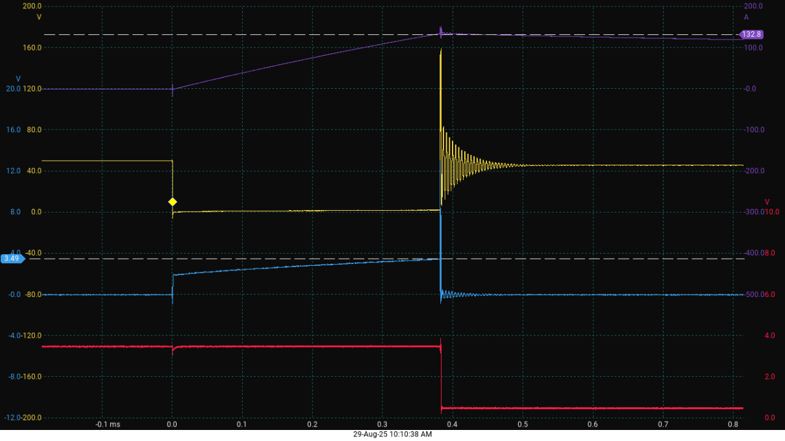
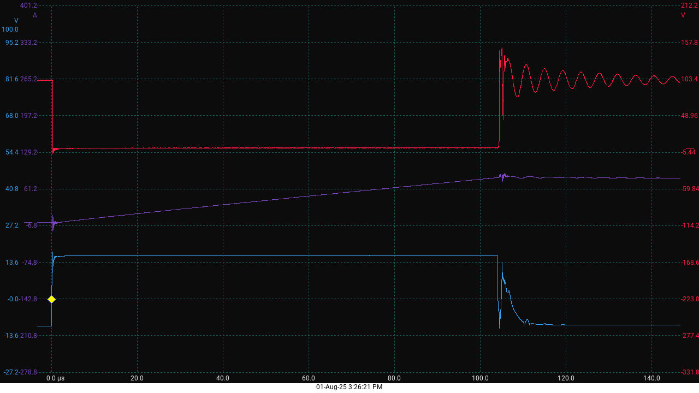
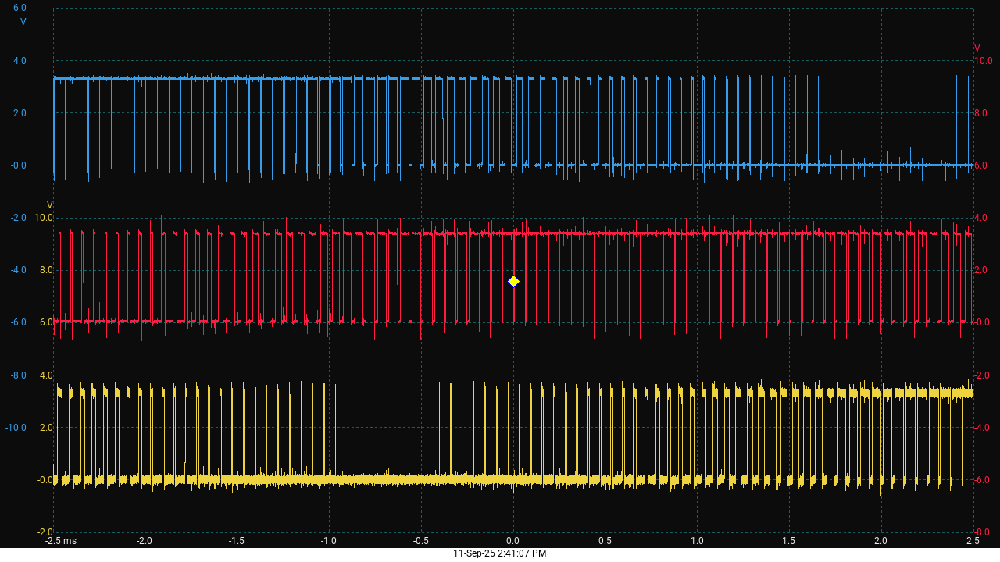
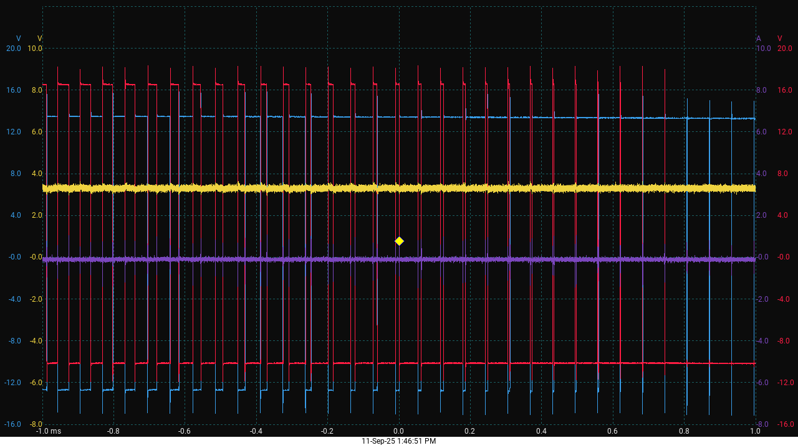
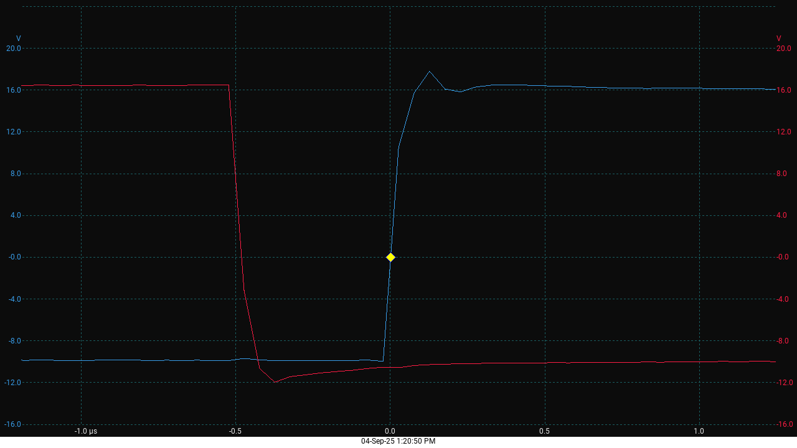
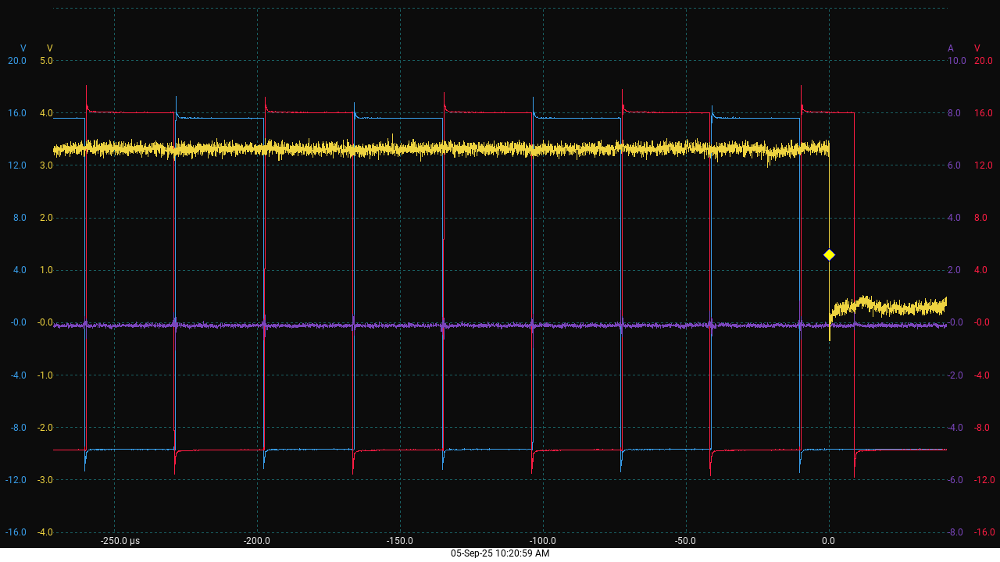
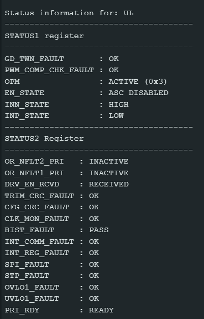

Project
Inverter Gate Driver
Gate driver board for the traction inverter's power stage. Verified switching behaviour — turn-on/turn-off transitions and ringing — with double-pulse testing on the bench, and used SPICE simulation to estimate losses ahead of hardware validation.
Overview
The gate driver PCB is one of three modular building blocks of the inverter system, alongside an MCU control module and a power stage module. It is centered around Texas Instruments' UCC5870-Q1, an isolated gate driver with integrated protection features suited for driving modern SiC and IGBT devices. Each PCB carries two gate drivers, enough to control one half-bridge (high-side and low-side switch) of one inverter phase. The board was built as a prototype for familiarizing with the driver IC and building the infrastructure needed for future testing of both hardware and software, rather than reaching for an off-the-shelf driver solution.
Power stage
The PCB runs from a 12V power input plus a 3.3–5V logic input. Each board carries two isolated DC/DC converters — one for the high-side driver, one for the low-side — that convert the 12V input into the isolated +15V/-9V rails each driver needs, maintaining galvanic isolation. In a future iteration, this power stage is planned to move into its own shared module powering all three gate driver boards in the final inverter, removing the need for an individual converter per low-side driver.
Driver communication and configuration
Communication with the UCC5870-Q1 drivers is over SPI, in the IC's addressed mode — a middle ground between standard SPI (one chip-select per device) and daisy-chain SPI (lower pin count, but higher latency since commands propagate sequentially through every device). Addressed SPI gives direct access to any individual driver while still keeping MCU pin count low.
Each driver can be configured to monitor and report a wide range of protection events: UVLO/OVLO on both the primary and secondary supplies, power-switch overvoltage, short-circuit faults (via either shunt-based sensing or desaturation), gate monitoring errors, SPI communication faults, and more. Fault reporting uses two open-collector outputs that can be wire-ORed across multiple drivers to minimize MCU pin usage; on a notification, the MCU queries every driver's status registers to pinpoint the exact cause.
Short-circuit protection
Short-circuit protection uses the driver's desaturation (desat) detection, which reliably catches short-circuit events while still allowing high nominal currents through the switch. A blanking capacitor on the DESAT pin sets the blanking time after turn-on during which desat detection is disabled, preventing false triggers from the switch's own turn-on transient. The desat threshold voltage is programmable through the driver's configuration registers. On a desat event, the driver can respond with a normal shutdown, a controlled soft-shutdown, or a two-level turn-off, limiting di/dt stress and overvoltage on the inverter leg.

Overvoltage protection
Overvoltage at turn-off — caused by stray inductance generating a voltage spike of L·(di/dt) on top of the DC link voltage — is clamped in hardware using a transient voltage suppressor (TVS) diode between the switch's collector and gate. When the collector-emitter voltage exceeds the TVS breakdown voltage, the diode conducts in reverse and injects current into the gate, partially turning the device back on and reducing di/dt, which clamps the overshoot.

Shoot-through protection
Two independent shoot-through protection strategies are supported: an IN+/IN- safety interlock (protects against controller logic errors by faulting if both high-side and low-side activation inputs go high together) and automatic dead-time insertion on the falling edge of IN- (105ns–4445ns, in 70ns steps, compensating for switching delays and component variation). The safety interlock was implemented and tested first, to protect the hardware during early development.
Software
Driver configuration and control software runs on an STM32G474 development board. It's structured into three modules:
Setup and driver configuration
An array of driver register structures is declared locally and initialized in software. Each driver goes through a structured sequence: address assignment, entry into a configuration state, SPI register writes, a read-verify cycle comparing the read-back values against what was written, and finally validation and enabling once the read-back matches.
PWM generation
Three pairs of complementary PWM outputs are generated using STM32's advanced timer in center-aligned mode at a fixed 16kHz, with hardware-enforced dead time between complementary signals. Duty-cycle modulation comes from DMA-driven updates out of a precomputed array of three 120°-phase-shifted sine waves, so all three phases update without any CPU involvement.



Fault reporting
When a fault is detected and not masked, an open-collector fault pin is pulled low, which activates the PWM timer's "Break" input and immediately aborts PWM generation in hardware. An ISR is triggered on the MCU side, and on the next main-loop iteration a driver status query goes out over SPI with the interpreted results printed over UART — giving a clear, human-readable fault description to anyone connected over a laptop.


Conclusion and future work
This stage of the project resulted in a proven hardware design and a complete software framework for open-loop operation, logically architected to support future enhancements. At this point, functionality was still limited by the lack of sensory feedback on motor state (rotor position), power metrics (DC-link voltage), and load conditions (phase currents) — since the project's end goal is implementing field-oriented control (FOC), which requires precise real-time feedback, development priority shifted toward integrating those sensory and communication modules. That work became the Inverter MCU Module.